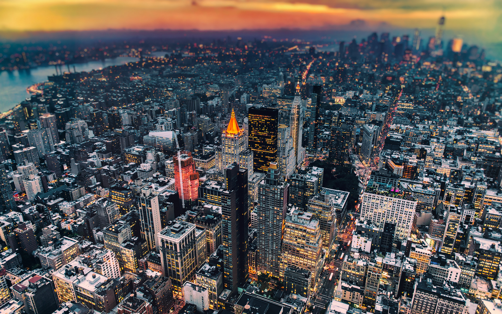

Соединённые Штаты Америки
Краткая информация
-
Место: 4 (ТОП-10)
-
Площадь: 9 826 675 км²
-
Население: 301 693 000 чел. (2022 г.)
-
Столица: Вашингтон (с 1800 г.)
-
Язык: Английский
-
Валюта: Доллар США, $
-
Крупнейшие города: Нью-Йорк, Лос-Анджелес, Остин, Чикаго, Сан-Франциско, Сиэтл, Филадельфия, Хьюстон, Сан-Диего, Даллас
Георафическое положение и границы
-

США на карте
-

США
Соединённые Штаты Америки — государство, расположенное в западном полушарии, большей частью на континенте Северная Америка. США состоят из 48 штатов в «континентальной части» и 2-х штатов, не имеющих общей границы с остальными: Аляски — расположенный на северо-западе континента Северной Америки (не путать с полуостровом Аляска, который значительно меньше), и Гавайев в Тихом океане. Кроме того, в состав США входят Федеральный округ Колумбия и инкорпорированная территория Атолл Пальмира (необитаемый атолл площадью 12 км², располагающийся в приэкваториальной зоне Тихого океана. Атолл находится к югу от Гавайских островов в группе островов Лайн. Инкорпорированная неорганизованная территория).
Административное деление США
- Штаты
- Федеральный округ
- Островные территории
- Внешние малые острова
Айдахо, Айова, Алабама, Аляска, Аризона, Арканзас, Вайоминг, Вашингтон, Вермонт, Виргиния, Висконсин, Гавайи, Делавэр, Джорджия, Западная Виргиния, Иллинойс, Индиана, Калифорния, Канзас, Кентукки, Колорадо, Коннектикут, Луизиана, Массачусетс, Миннесота, Миссисипи, Миссури, Мичиган, Монтана, Мэн, Мэриленд, Небраска, Невада, Нью-Гэмпшир, Нью-Джерси, Нью-Йорк, Нью-Мексико, Огайо, Оклахома, Орегон, Пенсильвания, Род-Айленд, Северная Дакота, Северная Каролина, Теннесси, Техас, Флорида, Южная Дакота, Южная Каролина, Юта
Округ Колумбия
Американские Виргинские острова, Американское Самоа, Гуам, Пуэрто-Рико, Северные Марианские острова
Бейкер, Джарвис, Джонстон, Кингмен, Мидуэй, Навасса, Пальмира, Уэйк, Хауленд
-
Карта США
-
Карта США
Границы
На юге США граничат с Мексикой, на севере — с Канадой. США также имеют морскую границу с Российской Федерацией. С запада территория США омывается Тихим океаном, с востока — Атлантическим, на юго-востоке США находится Мексиканский залив, полуостров Аляска с севера омывается Северным Ледовитым океаном. Среди границ США наиболее распространён так называемый геометрический (астрономический) тип границы. К этому типу относится большая часть границы США с Канадой (в том числе и граница Канады с Аляской). Восточная часть границы США с Мексикой проходит по руслу реки Рио-Гранде. Морские границы вдоль восточного и западного побережий, а также граница с Канадой в районе Великих озёр относится к разряду гидрографических. Они проведены по естественным (природным) рубежам с учётом особенностей рельефа. Западная часть границы с Мексикой представляет собой прямую линию, соединяющую две определённые на местности точки, при этом она пересекает территорию вне зависимости от рельефа, и, следовательно, может быть классифицирована как геометрическая граница. Следует сказать о границах штата Гавайи. Так как он находится на островах в Тихом океане, сухопутных границ не имеет. Границы проходят на расстоянии 12 морских миль от островной суши.
Часовые пояса
Континентальная территория США разделена на 5 часовых поясов.
С востока на запад: Восточный (UTC-05), Центральный (UTC-06), Горный (UTC-07), Тихоокеанский (UTC-08) часовые пояса. На Аляске действует Аляскинское время (UTC-09), Гавайи находятся в Гавайско-Алеутском часовом поясе (UTC-10). Почти на всей территории практикуется переход на «летнее время». То есть время в США может отставать от Московского от 7 до 13 ч.
-

Часовые пояса США
-
Часовые пояса США
Климат
Умеренный климат – это тот тип климата, который преобладает в Америке. Например, Нью-Йорк находится под влиянием умеренного и морского климата, что характеризует мегаполис, как влажное место с выраженными сезонами, частыми снегопадами и скачками температур.
Гавайи, Флорида и Калифорния относятся к тропической зоне. Жара там сменяется легким похолоданием только в зимние месяцы. Осадки случаются часто, бывают шторма на побережье.
На западе страны климат всегда более сухой, чем на востоке.
Субарктические и полярные условия характерны для американской Аляски. Для Великих равнин, а также штатов, которые там расположены, характерен климат полупустынь. Средиземноморский климат преобладает на востоке США по всему побережью.
Климат США в разных штатах
Огайо, Индиана, Западная Виргиния, а еще Иллинойс, Айова, Небраска и Мичиган претерпевают холодные зимы и жаркое лето. Южные штаты, такие как Луизиана, Джорджия, Техас и Арканзас, а также ближайшие к ним регионы отмечены субтропическим климатом. Для этих штатов подходит определение: теплая зима (не ниже 0 градусов), жаркое и влажное лето.
Вашингтон, Орегон, Вайоминг и Колорадо обладают более сухими климатическими условиями. Зима там бывает довольно теплой, но влажной, а лето длится дольше обычного, но бывает очень жарким.
Невада, Юта и Калифорния считаются зонами полупустыни. Сухая жара ежегодно жжет посевы на обширных полях штатов. В летнее время здесь не случаются осадки. С наступлением зимних месяцев столбик термометра не опускается ниже 0 градусов по Цельсию.
Калифорния – штат с двумя климатическими зонами. На побережье преобладает морской климат, а в глубине штата наблюдается засушливая и умеренная погода.
Альпийские климатические условия охватывают Тихоокеанский пояс Штатов, заходя на территорию Скалистых гор. Флорида – это тропики и лето круглый год. Штат Гавайи не имеет сухого сезона, там всегда влажно и тепло.
Аляска получила от природы в подарок суровые погодные условия. У берегов Аляски климатический режим больше похож на морской, Арктический климат начинается на северной стороне полуострова.
-
Климат США
-

Климатические пояса США
Особенности климата США
Особенности большого количества климатических зон в Штатах сводятся к стихийным бедствиям и негативным природным явлениям. Рассмотрим их подробнее:
- Засуха. Случается в штатах, где преобладают условия полупустыни. Сильнейшая засуха, уничтожившая многие фермерские хозяйства, случилась в Америке в 1931 году;
- Наводнения. На побережье нередко случаются шторма, приводящие к наводнениям в прибрежных городах. Регулярно топит и Калифорнию из-за дождей;
- Торнадо. По числу смерчей и ураганов Америка находится впереди планеты всей. Техас, Оклахома, Канзас и Миссури образуют «аллею торнадо». Там из-за частого столкновения разных воздушных масс смерчи случаются чаще всего. Гавайи тоже подвержены разрушительным ураганам;
- Землетрясения. Вулканы и тектонические разломы на территории Штатов способствуют тому, что на этих землях периодически случаются землетрясения. Калифорния, Аляска, Гавайи испытывают капризы природы на своей территории циклично и регулярно. Следствием постоянных землетрясений на западном побережье США становятся цунами.
Природа
Рельеф
Огромная страна, занимающая почти половину материка, обладает большим многообразием как климатическим, так и рельефным. Исходя из преобладания на территории того или иного рельефа условно всю территорию США можно разделить на 4 рельефных зоны:
- центральные равнинные территории;
- горные хребты Кордильер;
- плоскогорье Аппалачей и прочих старых гор;
- прибрежные или береговые низменности.
Каждая из зон характеризуется своими отличительными особенностями. Центральную часть территорий США занимают центральные равнины, пролегающие с севера на юг и занимающие порядка 3 млн. кв. км территорий. Рельеф их равнинный со множеством озёр и рек. Характер равнин неоднозначный: от плодородных сельскохозяйственных земель в центре равнин до голых полупустынь на юге.
Обширная горная система Кордильер протянулась на всём западном побережье США от Аляски до Калифорнии и Нью-Мексико. Сложная система горных хребтов Кордильер со своими межгорными котловинами условно делится на 3 пояса: восточный (пояс Скалистых гор), западный Тихоокеанский пояс (Каскадные горы, Нижняя Калифорния, береговые хребты и прочие) и внутренний пояс, состоящий из отдельных горных массивов и высоких плато (Колорадо, Юта и пр.). В западной и южных частях горных массивов отмечается повышенная сейсмическая активность за счёт наличия в той зоне как спящих, так и действующих вулканов.
Восточное побережье США обрамлено горной системой Аппалачей и других старых гор с их низменным плоскогорьем и речными долинами реки Миссисипи. Протяжённость Аппалачей порядка 2600 км с северо-востока на юго-запад. Старые горные хребты сильно сглажены эрозией и густо покрыты хвойными и широколиственными лесами, с их многообразной растительностью и животным миром.
Отдельную рельефную зону представляют собой Аляска и цепочка островов Гавайского Архипелага.
-
Кордильеры
-

Аппалачи
Реки и озёра США
Внушительная территория страны обуславливает наличие значительной внутренней водной системы США, состоящей из рек и озёр. Большинство рек относится к бассейну Тихого океана, хотя сброс основного водного массива осуществляется в воды Атлантического океана, и, в частности, Мексиканского залива. Наиболее крупными и значимыми реками США являются: Миссисипи (со своим крупным притоком Миссури), Гудзон, Юкон, Рио-Гранде, Арканзас, Колорадо, Огайо, Колумбия, Снейк и др.
-

р. Миссисипи
-

р. Гудзон
-

р. Юкон
-

р. Рио-Гранде
Самой крупной и одной из самых значимых рек Америки является река Миссисипи со своим крупным притоком Миссури. Истоком реки является озеро Айтаки в штате Миннесота. Миссисипи держит путь в южном направлении и впадает в Мексиканский залив. По длине она лишь на 30 км уступает своему крупному притоку Миссури. Общий водный бассейн Миссисипи составляет почти 3 млн. кв. км. По своим размерам она лишь уступает Амазонке и Нилу.
Ещё одна крупная и важная река – приток Миссисипи – Миссури. Площадь её водного бассейна составляет почти 1 тыс. 700 кв. км и занимает 1/6 площади всех Соединенных штатов Америки. Миссури называют «мутной» рекой, потому что её воды за счёт вымывания горных пород выглядят как мутный бурный поток. Русло реки судоходно.
Река Колумбия – крупнейшая река на северо-западе США, и в отдельные годы она может превышать по объёму водного сброса в океан приток Миссисипи – Миссури. За счёт этого на берегах Колумбии построено много гидроэлектростанций, в том числе и самая крупная в США – Гранд-Кули.
Многие реки США являются естественной границей не только штатов, но и страны в целом.
Не меньшую важность в развитии страны, формировании климата, рельефа, растительного и животного мира играют и озёра страны, как часть водных богатств США. Наиболее известные из них – это группа Великих озёр, расположенная на северо-востоке страны. И на западе США крупными озёрами являются озеро Тахо и Большое Солёное озеро.
К группе Великих озёр относятся – Верхнее, Гурон, Мичиган, Эри и Онтарио. Общая площадь этого водного пространства составляет порядка 250 тыс. кв. км., что делает его одним из самых крупных запасов пресноводной воды на земле. Самое большое в этой группе – это Верхнее озеро. Это самое крупное пресноводное озеро в мире и второе по площади среди всех озёр на планете.
-

оз. Верхнее
-

оз. Гурон
Ниагарский водопад и вулканы США
Ниагарский водопад (Niagara Falls) — каскад водопадов на границе Америки и Канады, между штатом Нью-Йорк и провинцией Онтарио. Пожалуй, Ниагарский водопад можно назвать самым эффектным естественным разломом земной коры. Река Ниагара, соединяющая озера Эри и Онтарио, падает с высоты 50-метрового обрыва шириной более 1000 м. Этот водопад по праву считается самым удивительным чудом природы Северной Америки.
-

Ниагарский водопад
Вулкан Килауэа (Kīlauea)
Килауэа – один из наиболее активных вулканов на Земле. Во многом именно благодаря ему ученые называют Гавайи участком поверхности с самыми быстрыми темпами роста – извергаемая этой «огненной горой» лава застывает при контакте с тихоокеанскими водами и продолжает формировать очертания крупнейшего острова в архипелаге. Мощь и красота извержений Килауэа привлекают к его склонам множество туристов, желающих собственными глазами увидеть впечатляющее зрелище.
-

Вулкан Килауэа
Гора Рейнир (Mount Rainier)
Величественный вулкан Рейнир, четвертый по высоте пик в США (за пределами Аляски), по праву можно назвать и одним из самых красивых. Вулкан находится под охраной национального парка, занимающего территорию в 368 кв. миль — в момент открытия в 1899 г. он стал пятым национальным парком в мире. Под снежной вершиной и в лесистых предгорьях скрываются бессчетные пешеходные тропы, громадные луга, усыпанные цветами, а также замечательный конический пик, бросающий вызов целеустремленным альпинистам.
-

Гора Рейнир
Национальный парк Гавайские вулканы (Hawai'i Volcanoes National Park)
Гавайи принято ассоциировать с роскошными пляжами, серфингом, океанским прибоем, изобилием цветов и танцев. Однако пятидесятый штат внес в общую копилку еще один уникальный национальный заповедник.
Гавайские вулканы — национальный парк США на острове Гавайи. Тут можно увидеть результат тысячелетней вулканической активности, процессов миграции и эволюции, которые сформировали сушу посреди океана с уникальной экосистемой. На территории парка находятся активные вулканы Килауэа и Мауна-Лоа. На Килауэа с 1983 г. происходит медленное, но непрерывное извержение, это один из самых активных вулканов на Земле.
-

Национальный парк Гавайские вулканы
Гора Сент-Хеленс (Mount Saint Helens)
Гора Сент-Хеленс — удивительный вулкан, в результате извержения которого образовался самый большой из зафиксированных в мире обвалов. Вулкан до сих пор действует, некоторые районы на склонах закрыты для посещения, дороги также могут закрыть без всякого предупреждения.
-

Гора Сент-Хеленс
Йеллоустонский национальный парк (Yellowstone)
Йеллоустонский национальный парк в северо-западной части Вайоминга был основан в 1872 году. Это первый национальный парк в мире, знаменитый своим геотермальным ландшафтом и гейзерами, в том числе и поразительно пунктуальным «старым служакой».
Йеллоустонский национальный парк является биосферным заповедником и, благодаря уникальной топографии, внесен в список объектов Всемирного наследия ЮНЕСКО. Большая часть территории парка находится в штате Вайоминг, выдаваясь в соседние штаты Монтана и Айдахо. Высота горных вершин варьируется от 3462 м – Игл-Пик, до 1610 м – Риз-Крик.
-

Йеллоустонский национальный парк
Растительный мир США
Хвойные леса белой и красной сосны, ели, сосны Банкса и пихты бальзамической проходят прерывистой узкой полосой вблизи канадской границы от штата Мэн до штата Минесота и на юг вдоль Аппалачей. Также там встречаются небольшие ареалы березы, ивы, ольхи, осины и тополя.
На юге переходная зона смешанных хвойных и лиственных лесов сменяется зоной широколиственных деревьев – клен, дуб, ясень, липа, грецкий орех, гикори, сикомора, бук и другие.
Сосны, пальметто и дубы сменяются на южной оконечности Флориды тропическими королевскими и соломенными пальмами, инжиром и мангровыми деревьями.
Пастбища расположены главным образом в районе Великих равнин и простираются на запад в межгорные бассейны и вплоть до Скалистых гор. Многочисленные травы — грамма, дикий овес и многие другие составляют растительный покров. Хвойные леса покрывают небольшие горы и высокие плато Скалистых и Каскадных гор, а также Сьерра-Невады. Основными деревьями этих лесов являются желтая сосна, пихта Дугласа, западный красный кедр, западная лиственница, белая сосна и другие. Непроходимые чащи расположены к западу от Каскадных и прибрежных хребтов в Вашингтоне, Орегоне и Северной Калифорнии, где деревья часто достигают высоты в 30 метров или более. Леса настолько темные, что внизу произрастают только папоротники, мхи и всего несколько видов кустов и трав, не нуждающихся в интенсивном солнечном свете.
-

Пихта Дугласа
Характерной растительностью пустыни, простирающейся от юго-восточной Калифорнии до Техаса, являются многочисленные виды кактусов, некоторые из которых достигают высоты деревьев, а также деревья Джошуа и другие юкки, креозотовые кусты, мескит и акации.
-
Креозотовые кусты
Страна является крупнейшим в мире производителем древесины. Более 4/5 продукции лесозаготовительной промышленности приходится на хвойные породы, такие как пихта Дугласа и южная сосна. Главной лиственной древесиной является дуб.
Животный мир США
Соединенные Штаты находятся в фаунистическом мире Неарктики, регионе, содержащем совокупность видов, сходных с Евразией и Северной Африкой, но резко отличающихся в тропических и субтропических зонах на юге. Основные региональные различия примерно соответствуют основным климатическим и растительным зонам. Так, например, сообщества животных сухого Запада резко отличаются от животных влажного Востока и Тихоокеанского побережья.
Лиственные леса восточного и юго-восточного побережья составляют самый важный из фаунистических регионов в Соединенных Штатах. Большое разнообразие рыб, земноводных и рептилий этого региона имеет схожие формы в Восточной Азии.
Существует большое разнообразие лягушек, включая древесных. Пресноводные черепахи на юго-востоке в значительной степени схожи с сородичами из Восточной Азии. То же самое можно сказать и о водных змеях, ящерицах, крысиных и зелёных змеях.
Леса юго-восточного региона — это дом белохвостого оленя, черного медведя, серой лисицы, енота и опоссума. Характерны дикая индейка и замечательное разнообразие дятлов. Птицы в целом отличаются от пернатых в Евразии.
-
Белохвостый олень
-

Чёрный медведь
Самым отличительным из здешних животных является американский бизон. Уникальным копытным животным Америки является вилорог, представляющий собой семейство промежуточное между оленем и антилопами. Животное сбрасывает рога, как олень, но при этом сохраняет костные ядра рога.
Юго-западные пустыни — рай для рептилий. Здесь в изобилии водятся ящерицы, такие как ядовитый гила-монстр, и гремучие змеи, из которых только несколько видов встречаются в других регионах Соединенных Штатов.
-

Гила-монстр
Скалистые горы и другие западные хребты обеспечивают отличительные места обитания для животных и грызунов, например, снежной козы и сурка. У каждого западного хребта раньше была собственный вид горных овец.
Млекопитающие двух побережий поразительно отличаются. Морские львы с длинными шеями и выступающими ушами встречаются только в Тихом океане – калифорнийский морской лев, морской лев Стеллера и морской котик. Тогда как на Восточном побережье, во Флориде обитают ламантины (морские коровы).
-

Калифорнийский морской лев
Природные ресурсы США
США извлекают немалую выгоду из обилия природных ресурсов, находящихся на их территории, включая леса, нефтяные и минеральные месторождения, а также плодородную почву. Наличие значительных природных ресурсов выгодным образом отражается на экономике Соединенных Штатов, способствуя развитию и созданию миллионов рабочих мест. Береговая линия протяженностью 94 000 миль позволяет легко транспортировать грузы в другие страны.
Плодородные почвы предоставляют возможность выращивать разнообразные сельскохозяйственные культуры не только для собственного потребления, но и экспортировать излишки за рубеж. Лесная промышленность очень развита на Тихоокеанском северо-западе и в юго-восточных штатах. Средний Запад лидирует в сфере животноводства (разведение крупного рогатого скота) и выращивании кукурузы. Животноводство также хорошо развито в юго-западных штатах.
-
Кукуруза
Соединенные Штаты являются третьим по величине производителем угля — 27% угля на мировой рынок поступает именно оттуда. На территории страны имеются значительные месторождения нефти, урана и никеля.
Полезные ископаемые
Соединенные Штаты являются одним из ведущих мировых производителей нефтепродуктов и имеют значительные запасы природного газа. Наиболее значительные месторождения углеводородов находятся на Аляске, в Калифорнии, Луизиане, Оклахоме, а также в Мексиканском заливе.
Соединенные Штаты также входят в число наиболее значительных мировых экспортеров угля. Угольные месторождения сосредоточены в основном в горах Аппалачей и в Вайоминге.
Добыча железной руды происходит преимущественно в Миннесоте и Мичигане. На территории Соединенных Штатов имеются значительные запасы меди, магния, свинца и цинка. Производство меди сосредоточено в горных западных штатах Аризона, Юта, Монтана, Невада и Нью-Мехико. Цинк добывается в Теннеси, Миссури, Айдахо и Нью-Йорке. Добыча свинца сосредоточена в Миссури.
-
Добыча полезных ископаемых в Миннесоте
Энергетические ресурсы
Соединенные Штаты являются одним из ведущих мировых производителей энергии. До начала 21-го века это был крупнейший в мире потребитель энергии, после чего звание перешло к Китаю.
Гидроэнергетические ресурсы в значительной степени сосредоточены в тихоокеанском и горном регионах. Однако гидроэнергетика составляет менее одной десятой от электроснабжения страны. Установки для сжигания угля обеспечивают более четверти мощностей страны, ядерные генераторы составляют примерно 1/10, а возобновляемые источники энергии — чуть более 1/10.
Около 82% всех видов энергии, используемой в Соединенных Штатах, производится из ископаемого топлива: нефть (35%), природный газ (28%), уголь (18%).
Соединенные Штаты являются импортером природного газа, большая часть которого поступает по трубопроводу из Канады, а оставшаяся доля из СПГ из других источников. Чистый импорт газа в США достиг максимума в 2007 году, когда страна импортировала 16,4 % потребляемого природного газа и являлась крупнейшим в мире нетто-импортером природного газа. К 2013 году, несмотря на растущее использование природного газа в США, чистый импорт упал до 5% потребления.
Также США являются чистым импортером электроэнергии из Канады и нетто-экспортером в Мексику.
Уголь
Большинство электроэнергии в стране генерируется на угольных ТЭС. Более 90% потребляемого угля используется для производства электроэнергии, тогда как в 1950 году только около 19% процента потребляемого угля предназначалось для этой цели.
Природный газ
Добыча и потребление природного газа увеличились в четыре раза между 1950 и 1970 годами, но стабильно стабилизировались в 1986 году. Крупнейшими газодобывающими штатами в 2007 году были Техас (30%), Вайоминг (10%), Оклахома (9%) и Нью-Мексико (8%), а 14% производства в стране поступали из федеральных оффшорных земель в Мексиканском заливе. Последние разработки в области ГРП (гидроразрыв пласта) и горизонтального бурения увеличили интерес к сланцевому газу. Ведущими областями являются Барнетт-Шейл в Техасе и Антрим-Шейл в Мичигане. Разведанные запасы природного газа в Соединенных Штатах в 2008 году увеличились на 35%, в сравнении с двумя годами ранее, в основном благодаря открытию месторождений сланцевого газа.
Быстрое увеличение добычи сланцевого газа к 2018 году превратило страну из импортера природного газа в экспортера и крупнейшего производителя.
Ядерная энергетика
Ядерная энергетика в Соединенных Штатах во многом зависит от импортного урана. В 2011 году добыча урана в США обеспечила 8 % уранового концентрата, загружаемого в ядерные реакторы. Остальная часть была импортирована. Основными источниками импортного урана стали Россия, Канада, Австралия, Казахстан и Намибия.
Возобновляемые источники энергии
2011 год стал первым годом с 1997 года, когда возобновляемые источники энергии превысили ядерное производство в США.
Гидроэнергетика в настоящее время является крупнейшим производителем возобновляемой энергии в США. В 2010 году на гидроэлектростанциях было произведено около 6,2% общего объема электроэнергии страны, что составляет 60,2% от общей возобновляемой энергии. Соединенные Штаты являются четвертым по величине производителем гидроэлектроэнергии после Китая, Канады и Бразилии.
Техас прочно утвердился как лидер в развитии ветроэнергетики, за ним следуют Айова и Калифорния. Также были построены несколько крупных солнечных ТЭС, самой большой из которых стала группа SEGS в пустыне Мохаве. Гейзеры в Северной Калифорнии являются крупнейшим комплексом геотермальной энергетики в мире.
-
Пустыня Мохаве
Водные ресурсы
Соединенные Штаты обладают значительными запасами пресной воды. На их территории находятся одни из наиболее известных пресноводных озер на планете — Великие озера, в которых содержится 6 квадриллионов галлонов воды.
Самая длинная река Миссури начинается в штате Монтана и простирается на 4 090 км, прежде чем впасть в Миссисипи, вторую по длине реку в Соединенных Штатах. Миссисипи (3 770 км) течет к югу и впадает в Мексиканский залив. Ежесекундно река проносит 4,5 миллиона галлонов через устье в Новом Орлеане, обеспечивая водой около 15 миллионов человек.
Другой важной рекой Соединенных Штатов является Гудзон, протекающий через северо-восточную часть страны и впадающий в Атлантический океан в Нью-Йорке.
Реки на западе страны непригодны для судоходства, потому что текут через глубокие каньоны и испещрены многочисленными порогами. Однако, это делает их хорошим источником электроэнергии. Эти реки начинаются в Кордильерах и впадают в Тихий океан. Самые крупные — Колумбия и Колорадо.
-

р. Колумбия
-

р. Колорадо
Всемирно известный регион Великих озер расположен на северо-востоке Соединенных Штатов и граничит с Канадой. Это система из пяти крупных озер (Верхнее, Мичиган, Гурон, Эри и Онтарио), соединенных естественными каналами.
Большое Соленое Озеро, расположенное в северной части штата Юта, является самым большим соленым озером в западном полушарии. Хотя оно называется «мертвым морем Америки», озеро стало домом для миллионов местных птиц, креветок, морских и водоплавающих птиц.
-

Большое Соленое Озеро
США стали одной из первых стран, развивающаяся экономика которых встретила нехватку чистой пресной воды. Такая критичная ситуация была вызвана исключительно быстрым ростом потребления воды и постоянством размера речного стока. Водный кризис начал проявляться в начале 60-х годов. Именно тогда появились гигантские проекты по транспортировке пресной воды из Канады и Аляски на основную территорию США. В конце 60-х годов стало очевидно, что проблема не может быть решена путем очистки использованной воды.
Основное увеличение потребления воды происходит в этой сфере национальной экономики, где вода необходима главным образом для охлаждения — в промышленности, особенно в теплоэнергетике.
Биологические ресурсы
Более 2/5 общей площади суши США занимаются сельским хозяйством (включая пастбища и ареал). Табак выращивается на юго-востоке и в штате Кентукки, хлопок — на юге и юго-западе; Калифорния знаменита своими виноградниками, цитрусовыми рощами и садами. Средний запад является сельскохозяйственным центром кукурузы и пшеницы, в то время как стада крупного рогатого скота сосредоточены в северных штатах.
Большая часть лесных угодий США расположена на западе (включая Аляску), но внушительные леса также произрастают и в других штатах. Почти половина лесов лиственных пород страны находится в горах Аппалачи.
Что посмотреть в США в первую очередь
- Статуя Свободы (Statue of Liberty) (г. Нью-Йорк)
-

Статуя Свободы
- Центральный парк (Central Park) (г. Нью-Йорк, Манхэттен)
- Центральный зоопарк, разделенный на зоны для детей и взрослых;
- Дайри – здесь можно узнать всю информацию, связанную с деятельностью парка;
- Гапстоу Бридж – каменный мост, место встречи влюбленных пар;
- Овечий луг – огромная поляна, где можно сидеть прямо на траве;
- Бельведер – старинный замок над Черепашьим прудом;
- Сад Шекспира – участок площадью в 4 акра, где высажены растения, воспетые великим драматургом;
- Игла Клеопатры – статуя высотой 20 метров, подаренная Египтом в 1880 году в обмен на помощь в модернизации страны.
-
Центральный парк
- Голливуд и Аллея звезд (Hollywood Walk of Fame) (г. Лос-Анджелес, штат Калифорния)
-
Голливуд и Аллея звезд
- Ниагарский водопад (Niagara Falls) (штат Нью-Йорк)
-

Ниагарский водопад
- Лас-Вегас (Las Vegas) (штат Невада)
-

Лас-Вегас
- Гранд-Каньон (Grand Canyon) (штат Аризона)
-

Гранд-Каньон
- Майами-Бич (Miami Beach) (штат Флорида)
-
Майами-Бич
- Йеллоустонский национальный парк (штат Вайоминг)
-
Йеллоустонский национальный парк
- Мост «Золотые ворота» (Golden Gate Bridge) (г. Сан-Франциско)
-

Мост «Золотые ворота»
- Гора Рашмор (Mount Rushmore) (штат Южная Дакота)
- Вашингтон – правитель, приведший США к демократии;
- Джефферсон – автор Декларации о независимости;
- Рузвельт – обладатель Нобелевской награды мира;
- Линкольн – известен тем, что при его правлении было устранено рабство.
-
Гора Рашмор
- Знак Голливуда (The Hollywood Sign)(г. Лос-Анджелес)
-
Знак Голливуда
- Манхэттен (Manhattan) (г. Нью-Йорк)
-

Манхэттен
- Монумент Вашингтона (Washington Monument) (г. Вашингтон)
-
Монумент Вашингтона
- Таймс-Сквер (Times Square) (г. Нью-Йорк)
-

Таймс-Сквер
- Диснейуорлд в Орландо (Walt Disney World) (штат Флорида)
-
Диснейуорлд в Орландо
Впервые оказавшись в Америке, люди стремятся увидеть все достопримечательности США. Один из самых известных в мире символов страны – Статуя Свободы – расположен на небольшом острове в порту Нью-Йорка.
Величественная скульптура женщины с факелом в руке, протянутым в небеса, стала олицетворением свободы Америки. Корона на ее голове имеет семь лучей, что обозначает семь континентов и семь океанов (по западной географической традиции). В другой руке она держит плиту с выбитой на ней датой принятия Декларации о независимости.
Статуя Свободы – это не только символ, но и действующий маяк в Нью-йоркской гавани. Высота статуи от начала постамента до верхней части факела насчитывает 93 метра. Сделана фигура из медных пластин, установленных на стальной каркас.
Внутри нее оборудован Музей заселения Америки, отображающий исторический путь страны, а также винтовая лестница, ведущая до самого верха, откуда можно обозреть всю гавань. На остров туристов доставляют на пароме, что очень удобно.
Достопримечательности США вызывают большой интерес у туристов. Особое место среди них занимает нью-йоркский Центральный парк. Это оазис спокойствия в бурном деловом потоке Манхэттена. Зеленая зона раскинулась на 4 км в длину и 800 метров в ширину.
Открытие парка состоялось в 1859 году. Десятки тысяч рабочих еще 20 лет облагораживали территорию. Было посажено около 5 млн деревьев, а землю привозили из экологически чистых зон.
Теперь парк имеет целую инфраструктуру отдыха. Это различные игровые площадки, аттракционы, катки и просто лужайки для пикника. На территории парка находятся:
Это крупнейшие элементы огромной лесной зоны. Теперь у вас не возникнет вопроса, что посмотреть в США в первую очередь. Центральный парк является самой посещаемой достопримечательностью – 25 млн. человек в год.
Нельзя пройти мимо знаменитой достопримечательности США – Звездной аллеи. Она является символом Калифорнии и наиболее посещаемым местом в Америке. Находится Аллея во внутреннем дворе театра Граумана и представляет собой комплекс бетонных плит со звездами из меди. Именно на этих звездах и запечатлены имена знаменитостей. Насчитывается таких плит около 2600. Первая звезда появилась в далеком 1958 году.
Там же присутствуют плиты с отпечатками рук и ног известных людей. И не только людей – овчарка из сериала «Комиссар Рекс» была удостоена чести оставить отпечатки лап.
Основная часть Аллеи растянулась на 15 кварталов. Ежегодно ее посещают более 10 млн человек. Для планирующих поездку в США Голливуд и Аллея звезд находятся в самом верху списка посещений известных достопримечательностей.
Это объединение нескольких водопадов на реке Ниагаре, которая протекает между штатом Нью-Йорк и Канадой. Комплекс состоит из таких водопадов, как: Канадский, Американский, «Фата».
Соединяясь, они создают мощнейший водный каскад. Полюбоваться красивыми видами с американской стороны приезжает множество романтиков. Чуть ниже по течению через реку сооружен мост, он рассчитан как на пешеходов, так и на автомобили. Около водопада возвышаются ГЭС, общая мощность которых 4,5 гигаватт.
Водопад является одним из главных источников энергии для Нью-Йорка. Комплекс водопадов дважды замерзал – в середине XIX века и начале XX.
Лас-Вегас заслуженно считается крупнейшим центром игровой (азартной) индустрии. Город наполнен множеством казино и отелей. Нескончаемые концерты и световые шоу не дают заскучать туристам круглые сутки. Приезжая сюда, будьте готовы не спать с ночи до утра.
Многие большие компании с мировыми брендами проводят здесь свои презентации и банкеты. Как только вы окажетесь в Лас-Вегасе, вопрос, что посмотреть в США, сразу же отпадет. Это город больших огней и денег, желаний и их исполнения.
Идеальный климат – еще одна причина посетить этот город возможностей. Жаркое лето и короткая бесснежная зима являются характерными для климата субтропиков. Вот почему сюда стекаются не только туристы со всего мира, но и сами американцы.
Гранд-Каньон (Большой каньон) считается самым глубоким каньоном в мире. Он располагается на территории одноименного национального парка в штате Аризона. В давние времена здесь проживали индейцы различных племен. На дне каньона протекает река Колорадо. Туристы могут устроить сплав по реке на плотах. Данный объект входит в список ЮНЕСКО.
Любые достопримечательности США поражают своей красотой и величественностью. Гранд-Каньон не исключение. Для многих людей - это символ вестернов, вечного противостояния индейцев и американцев. Фауна и флора здесь довольно разнообразна за счет изменения климата на различной высоте каньона. Здесь можно встретить много видов млекопитающих (белки, олени), а также грызунов и летучих мышей. Из флоры – сосна, пихта и ель.
Туристы предпочитают южный край каньона, где находятся смотровые площадки и начинаются интереснейшие пешие маршруты по тропам. Да и на автомобиле сюда легче всего добраться, в отличие от северной стороны. Приехав сюда, можно часами исследовать разнообразные ущелья и малые каньоны.
Курортный город с говорящим названием, наиболее посещаемый в стране. Протяженность песчаного пляжа составляет более 11 километров, вдоль него располагаются гостиницы и частные дома. Все мы видели открытки или марки с изображением архитектуры в стиле ар-деко или изображение открытого кабриолета с парнем в солнечных очках за рулем. Здесь все это оказывается реальностью. Белый песок, теплая вода – что еще нужно для счастья?
На известной улице под названием Оушен Драйв собираются сливки общества. Здесь нередко можно встретить знаменитостей, загорающих на пляжах Майами. После жаркого дня прогуляйтесь по улице Эспаньола-Уэй, где вы найдете множество ресторанов с европейской кухней. Есть и небольшие кафе, где в уютной обстановке вы сможете пообедать и отдохнуть. Как ни странно, но летом на курорте самые низкие цены, а вот дорогим периодом отдыха является весна.
Этот национальный парк охватывает территорию нескольких штатов: Вайоминг, Айдахо и Монтана. Гейзеры и термические источники – визитная карточка Йеллоустонского парка. Туристы, оказавшиеся в парке, смогут увидеть красивейшие местные озера, реки и каньоны. Озера, находящиеся в жерле супервулкана Кальдера, – это известные достопримечательности США. Местная флора и фауна представлена несколькими тысячами видов растений, а также множеством млекопитающих животных и птиц.
С середины лета до начала осени до парка можно доехать на общественном транспорте (автобус) из Бозмена либо на собственном авто. Приезжая на место, турист начинает пешую прогулку по асфальтированным дорожкам, огибающим все достопримечательности парка. Также здесь существуют девять музеев, считающихся памятниками истории. Хотя бы несколько из них нужно посетить обязательно. Устав от длительного похода, можно остановиться на ночь в местном отеле, но место в нем лучше резервировать заранее.
Охотиться в пределах парка запрещено, зато рыбачить разрешается, но только после приобретения специальной лицензии.
Золотые ворота – из самых популярных и узнаваемых достопримечательностей в США. Этот мост вы определите с первого взгляда, даже если никогда прежде здесь не бывали. Поэтому на вопрос, что посмотреть в США, можно смело предложить отправиться на знаменитый мост.
Подвесной мост протяженностью чуть больше 2500 метров соединяет знаменитый Сан-Франциско с округом Марин. Бесперебойное сообщение помогает легко попасть из округа в город. Эта громадина весит почти миллион тонн. Оказавшись в Сан-Франциско, обязательно посетите это настоящее произведение искусства, чтобы сделать несколько памятных фото на фоне моста и ощутить «соприкосновение» с этим величественным гигантом.
Рашмор – самая знаменитая гора в США. Известна она тем, что в ее граните выбиты лица четырех президентов государства:
Известная достопримечательность находится на территории Южной Дакоты, образы выбиты на скале, входящей в состав гор Блэк-Хилс.
Гора находится на территории национального парка, в котором функционирует центр спортивного скалолазания. У подножия горы расположены несколько музеев, посвященных строительству мемориала, а также аллея из флагов различных штатов государства.
Пожалуй, даже те, кто ни разу не был в США, хотя бы раз видели главную достопримечательность Голливуда — его знак, расположенный на Голливудских холмах на высоте 490 метров. Он был создан почти столетие назад, когда окружающие окрестности ещё представляли собой необжитые территории.
Высочайшие здания, важнейшие торговые и финансовые заведения, главные достопримечательности Нью-Йорка — всё это сосредоточено в самом маленьком, но в то же время самом популярном среди туристов районе мегаполиса. Несомненно, самой видной достопримечательностью Манхэттена являются небоскрёбы, плотные ряды которых здесь создают некое подобие каньонов — на местные улицы практически никогда не попадает солнечный свет.
Первый американский президент Джордж Вашингтон является одной из самых важных политических фигур в США и просто легендарной личностью, занимающей почётное место в истории страны, поэтому ему был посвящен знаменитый памятник — Монумент Вашингтона в самом сердце американской столицы. Памятник представляет собой прямой четырёхгранный столб, сужающийся кверху, а его вершину венчает четырёхгранная пирамида. На земле монумент окружают 50 флагов, символизирующих 50 американских штатов. В качестве строительного материала для памятника использован мрамор, в меньших количествах — гранит и металл. Примечательно, что внутри конструкции положена лестница, ведущая на смотровую площадку, а в основу этой лестницы легли 193 памятных камня, свезённых из всех штатов, а также из некоторых других стран.
В центре Манхэттена находится яркая, эффектная площадь — Таймс-Сквер, пестрящий рекламными растяжками, огромными экранами и щитами. Это площадь-символ, необычайно оживлённое место, где проводятся фестивали, концерты и отмечаются важнейшие праздники — например, в новогоднюю ночь здесь собирается не меньше миллиона человек, а ежедневно на площади бывает около 300 тысяч любителей ярких огней, небоскрёбов и городского шума. Для многочисленных туристов Таймс-Сквер — обязательный пункт в Нью-Йорке, который привлекателен не только своим внешним видом, но и большим количеством театров, ресторанов, кинотеатров, телестудий, бродвейских шоу, а также узнаваемыми небоскрёбами на северной и южной оконечностях площади.
Крупнейший в мире парк развлечений находится именно в США, в штате Флорида. Площадь Диснейуорлд составляет более 100 кв. километров, а посещаемость превышает 52 миллиона человек в год! По сути, это даже не парк, а целый город сказок и волшебства, куда входит четыре парка с аттракционами и два великолепных аквапарка, а также ряд отелей, зон отдыха, магазинов, кафе, ресторанов, и даже поля для гольфа. Каждая часть этого городка по-своему интересна и своеобразна, тематические декорации и невероятные аттракционы круглый год создают атмосферу праздника и веселья. Этот парк был вторым из крупных развлекательных комплексов в Америке, созданных Walt Disney Productions во главе с Уолтом Диснеем. Существует ошибочное мнение, что все аттракционы Диснея, созданные в разных уголках света, одинаковы. На самом деле, именно Диснейуорлд во Флориде собрал все основные тематические развлечения, остальные же парки лишь копируют некоторые из этих аттракционов.
Кухня
Самые популярные блюда в США
Штаты — большая и многонациональная страна. Конечно, в разных частях государства рецепты приготовления блюд имеют свои вариации, но именно эти популярны во всех уголках:
Барбекю (barbecue). Слово уже стало нарицательным: это и способ приготовления, и собственное название блюда, и даже вариант семейного досуга. Попробовать барбекю можно в любом штате, хотя считается, что вкуснее всего его делают в Техасе. Блюдо можно отведать не только в ресторане, но и купить мясо на рынке или в магазине и пожарить на природе. Мой совет — устроить барбекю самостоятельно. Это всегда доступно: в парках и на пляжах США часто установлены столы для барбекю.
-
Барбекю
Арахисовая паста (peanut butter), пожалуй, любимое лакомство жителей США и мое, безусловно, тоже. Она настолько популярно в стране, что 24 января провозглашено Национальным днём арахисовой пасты. В большом ассортименте продаётся в магазинах, и чаще всего ее берут на завтрак.
-
Арахисовая паста
Панкейки с кленовым сиропом (pancakes with maple syrup). Панкейки — это толстые блинчики, а кленовый сироп пришел в американскую кухню из канадской (подробнее о гастрономической культуре Канады читайте здесь). Помимо сиропа, панкейки подают с бананами или мороженым. Их американцы тоже предпочитают есть на завтрак. Попробовать панкейки можно практически в любой закусочной Америки, они очень популярны. Ну или же купить в магазине и просто разогреть. Хотя, на личном опыте я убедилась, что лучше, когда их выпекают профессионалы.
-
Панкейки с кленовым сиропом
Бургеры (burgers). Да, безусловно, чизбургеры и гамбургеры — это то, что чаще всего ассоциируется у людей при упоминании словосочетания «кухня США». И надо сказать, здесь и правда самые вкусные бургеры их тех, которые я пробовала. Они с абсолютно разной начинкой и совершенно разного размера. Бывает и по три котлеты, и даже по пять или же внутри крабовое мясо. А иногда бургеры подают и вовсе без булочки, с листьями салата. Да, американцы действительно устраивают конкурсы в стиле «кто съест больше бургеров за час».
-
Бургеры
Кухня центральных штатов
На кухню центральных штатов большое влияние оказала Европа. Франция, Англия, Ирландия — многие переселенцы оттуда отправлялись в США и обосновывались в Кентукки, Теннеси и Алабаме. Итак, что здесь можно попробовать:
Устрицы скалистых гор (rocky mountain oysters). Такие устрицы — традиционное, хоть и необычное для нас, блюдо Колорадо. На самом деле «устрицы» — всего лишь название. В реальности это обжаренные бычьи или овечьи яички. Безусловно, самому такое приготовить сложно, поэтому лучше отправиться на дегустацию в ресторан.
-
Устрицы скалистых гор
Жареный цыплёнок (fried chicken). Жареная курица, наверное, также, как и бургеры, ассоциируются с традиционной американской кухней. Однако на самом деле обыкновение готовить птицу именно таким образом пришло в США из Великобритании. Со временем жареный цыплёнок стал национальным блюдом, и считается, что лучшее мясо подают в Кентукки. Кстати, именно здесь была основана компания KFC.
-

Жареный цыплёнок
Кухня юго-запада США
Говоря о кухне юга и запада США, нельзя не отметить, что она впитала в себя влияние латиноамериканских стран. Даже в Мексике говорят, что все лучшие повара уже давно уехали в Америку. Острая пища, мясо, тушёные овощи — вот основные компоненты кухни этих штатов.
Тако (taco). Это национальное мексиканское блюдо, лепёшка с разнообразной начинкой (мясной, овощной и рыбной). Считается, что лучшее тако готовят в Калифорнии, Техасе и Аризоне. Популярное место среди американцев, где можно попробовать тако и не только, — мексиканский фастфуд Taco Bell.
-
Тако
Рулетики с тортильей (кукурузной лепешкой) и всевозможными начинками: от курицы или говядины до простых овощей. Как правило, энчиладас подаётся с гуакамолле (соус из авокадо) и сметанным соусом. Пробовать лучше в ресторанах. Самые вкусные энчиладас ищите во Флориде и Техасе.
-
Рулетики с тортильей
Морепродукты (seafood). Глупо говорить о кухне юго-западных штатов и не упомянуть о морепродуктах. Рыба, креветки, моллюски, крабы — всё это неотъемлемая часть гастрономической культуры региона. Дары моря в огромном количестве поставляются в магазины в виде полуфабрикатов, а в кафе и ресторанах всегда можно найти рыбное блюдо по вкусу. Да и, собственно, знаменитые роллы «Калифорния» не просто так названы. Их рецепт придуман именно здесь и отношения к Японии не имеет.
Кухня северо-востока США
Здесь влияние мексиканских гастрономических традиций практически не ощущается. В фаворе морепродукты, выпечка и овощи:
Чикагская пицца (Chicago's pizza) хоть и называется пиццей, я считаю, что это пирог. Она очень популярна не только в Чикаго, но и по всей стране, но всё-таки именно в иллинойском исполнении — лучшая.
-
Чикагская пицца
Нью-Йоркский чизкейк (Cheesecake New York), пожалуй, самый популярный торт в США и, как я думаю, в Европе. Эти чизкейки готовят из сыра «Филадельфия». Можно купить в магазине, ближайшей кафешке или же в хорошем ресторане.
-
Нью-Йоркский чизкейк
Пончики (beignet) — здесь я говорю не о знаменитых донатах, которые так много едят полицейские из американских сериалов, а о луизианских пончиках родом из Нового Орлеана. Под звуки джаза их можно попробовать в Cafe Du Monde.
-
Пончики
Напитки
Америка — родина огромного количества напитков, которые впоследствии стали частью культуры страны (и, кстати, не только США). Самыми популярными из них являются:
Coca-Cola. Безусловно, напиток, придуманный в Атланте, является самой популярной газировкой мира. Изначально позиционировавшаяся как лекарство, «Кола» приобрела известность и уже давно поставляется по всему миру. Компания также производит Sprite, Fanta, Bonaqua, известные далеко за пределами США.
-

Coca-Cola
Dr Pepper — еще один популярный газированный напиток, появившийся в США. Бренд постоянно мелькает в различных сериалах, фильмах и клипах. Купить без проблем можно в любом магазине.
-

Dr Pepper
Пиво. Американскую пивную индустрию составляет множество пивоварен. Пиво американцы пьют на любой вечеринке, барбекю или же просто за просмотром фильмов. Магазинное пиво дешёвое и, как правило, лёгкое. Самыми популярными брендами являются Bells, Budweiser, Breakside, Samuel Adams.
Кофе. Несмотря на то, что кофе не является национальным американским напитком, он чрезвычайно популярен здесь. Подтверждением этого служит не только кофе «американо» (в переводе с итальянского «кофе по-американски»), а ещё и кофейни, которые расположены на каждом шагу.
- https://dic.academic.ru/dic.nsf/ruwiki/15330
- http://actravel.ru/usa.html
- https://ru.wikipedia.org/wiki/Климат_США
- https://usamagazine.ru/klimat-ssha/
- https://natworld.info/nauki-o-prirode/priroda-zhivotnye-i-rasteniya-soedinennyh-shtatov-ameriki-opisanie-i-foto
- https://wikiway.com/usa/dostoprimechatelnosti-tag-vulkany/
- https://sitekid.ru/planeta_zemlya/ssha/rastitelnyj_i_zhivotnyj_mir_ssha.html
- https://www.tripzaza.com/ru/destinations/dostoprimechatelnosti-ssha
- https://travelask.ru/united-states/chto-poprobovat-v-amerike-traditsionnaya-kuhnya-i-eda